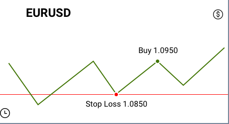

Edike tet ou
Le Forex (Foreign Exchange) est un vaste réseau de traders de devises, qui vendent et achètent des devises à des prix déterminés, et ce type de transfert nécessite la conversion de la devise d'un pays à un autre. Le trading Forex est effectué par voie électronique de gré à gré (OTC), ce qui signifie que le marché des changes est décentralisé et que toutes les transactions sont effectuées via des réseaux informatiques.
Le marché Forex est le marché le plus grand et le plus négocié au monde. Son chiffre d'affaires quotidien moyen s'élevait à 6600 milliards de dollars en 2019 (1,9 billion de dollars en 2004). Le Forex est basé sur la conversion de devises gratuite, ce qui signifie qu'il n'y a pas d'interférence du gouvernement dans les opérations de change.
Le trading Forex est le processus d'achat et de vente de devises à des prix convenus. La plupart des opérations de conversion de devises sont effectuées dans un but lucratif.
IFC Markets propose 3 plateformes de trading: MetaTrader4, MetaTrader5, NetTradeX. La plateforme de trading MT 4 Forex est l'une des platesformes les plus téléchargées disponibles sur PC, iOS, Mac OS et Android. Il dispose de différents indicateurs nécessaires pour effectuer une analyse technique précise. NetTradeX est une autre plateforme de trading proposée par IFC Markets et conçue pour le trading CFD et Forex. NTTX est connu pour son interface conviviale, sa fiabilité, ses précieux outils d'analyse technique, ses fonctionnalités remarquables et la possibilité de créer des instruments composites personnels (PCI) qui sont disponibles spécifiquement sur NetTradeX.
Forex n’est pas un jeux de roulettes, parce qu'à la base des fluctuations des prix des devises il y a certains principes. Premièrement, les prix des devises dépendent de performence économique de pays. Au second, ce phénomène est lié aux préférences et aux attentes des Participants de Forex. L’ensemble de ces facteurs est enregistré dans l’analyse commerciale comprenant plutôt les facteurs objectifs que les casualités.
Actuellement il est accepté globalement que le risque est la partie fondamentale de chaque activité commerciale. Il n’arrive pas toujours à avoir les résultats planifiés. Mais en même temps, c’est particulièrement risqué d’impliquer dans le trading. Grâce à la compléxité et à la nature imprévisible du comportement commercial, il est facile de subir des pertes et il n’y a jamais de confidence à 100% que les résultats seront positifs. La plupart est différé du travail des marchés financiers, malgré l’accès facile grâce aux technologies de communication modernes et aux paquets puissants de Logiciel de Trading analytique.
Il existe aussi un autre trait important connu pour ceux qui ont déja pris part à n’importe quelle activité commerciale: la divergence entre les résultats réels et les plans est inévitable. On peut trouver toujours des moments inattendus qui causent des menaces aux opérations, même les facteurs économiques et politiques des grandes influences ont ces inconvénients. Donc, on conclut que la risque est la partie inhérente de chaque type d’activité. Le seul moyen d’éviter de risque c’est ne rien faire.

Actuellement il est accepté globalement que le risque est la partie fondamentale de chaque activité commerciale. Il n’arrive pas toujours à avoir les résultats planifiés. Mais en même temps, c’est particulièrement risqué d’impliquer dans le trading. Grâce à la compléxité et à la nature imprévisible du comportement commercial, il est facile de subir des pertes et il n’y a jamais de confidence à 100% que les résultats seront positifs. La plupart est différé du travail des marchés financiers, malgré l’accès facile grâce aux technologies de communication modernes et aux paquets puissants de Logiciel de Trading analytique.
Il existe aussi un autre trait important connu pour ceux qui ont déja pris part à n’importe quelle activité commerciale: la divergence entre les résultats réels et les plans est inévitable. On peut trouver toujours des moments inattendus qui causent des menaces aux opérations, même les facteurs économiques et politiques des grandes influences ont ces inconvénients. Donc, on conclut que la risque est la partie inhérente de chaque type d’activité. Le seul moyen d’éviter de risque c’est ne rien faire.
L’effet de levier Forex est le ratio (rapport) des fonds du client à la taille du crédit du courtier. En d’autres termes, l’effet de levier est un capital emprunté pour augmenter les rendements potentiels. Habituellement, la taille du levier dépasse le capital investi plusieurs fois.
La taille de l’effet de levier n’est pas fixée dans toutes les entreprises. Le levier dépend des conditions commerciales proposées par certaines entreprises.
Ainsi, bien que l’effet de levier puisse augmenter les profits potentiels, il a également la capacité d’augmenter les pertes potentielles. C’est pourquoi vous devez choisir avec soin le montant de l’effet de levier sur votre compte de trading. Mais il convient de noter que bien que le trading de cette manière nécessite une gestion prudente des risques, de nombreux opérateurs tradent toujours avec un effet de levier pour augmenter leur retour sur investissement potentiel.
Cependant, il est totalement possible d’éviter les effets négatifs du levier Forex dans les résultats commerciaux. Ce n’est pas rationnel de trader en balance complète, ou d’ouvrir une position au volume de trading maximum.
Comment fonctionne l'effet de levier Le Solde (Balance) de compte est de 1000 Dollars avec levier financier de 1:100. Vous avez décidé d'ouvrir une position d'achat avec le paire EURUSD au volume de 10.000. La position est ouverte au prix 1.0950. L'ordre "Stop Loss" est fixé par le prix 1.0850. La marge exigée pour cette position est égale à 10 000 € x 1/100 x 1,095 = 109,50 $. Si vous ne voulez pas consacrer beaucoup de temps au calcul des marges pour toutes vos positions, vous pouvez utiliser notre Calculateur de Marge. Dans le cas où le marché fonctionne dans les directions différentes, votre perte sera égale aux 100 Dollars, si 1 pip dans le paire de devise EURUSD est de 1 Dollar (pour 10.000 volumes), et la différence entre votre prix ouvert et le niveau de “Stop Loss ” est de 100 pips. Si vous n’utilisez pas l’ordre “Stop Loss”, vous risquez de perdre plus de 100 Dollars, tenant compte des moments de fermeture de vos positions. L'ordre "Stop Loss" peut être utilisé simultanément pour les positions longues et courtes et son niveau est à votre initiative: pour cela que c'est l'un des outils de gestion le plus risqué dans le trading en ligne.

Si vous voulez apprendre comment trader le Forex, vous devez prendre en compte qu'il faudra du temps, des efforts et de la volonté. PSL vous propose de ne pas gaspiller votre temps à chercher des matériaux, mais plutôt d’étudier tout directement avec nous. Le marché des échanges actuel est l'un des domaines les plus populaires pour tous, puisque la rotation journalière sur ce marché est supérieur à 4 trillions.
Cette section révèle les concepts principaux du Trading Forex et donne une excellente occasion d'apprendre à trader sur le marché Forex.
Supposons que le taux de USD/JPY est égal à 95.620/95.650 et que vous avez décidé d'acheter 200 000 USD. Votre transaction est exécutée au prix Ask 95.650.
200 000 USD * 95.650 = 19 130 000 JPY
Donc, vous achetez 200 000 USD et vendez 19 130 000 JPY.
Supposons que le taux de USD/JPY change à 96.400/96.430 et vous décidez de vendre 200 000 USD de retour. L'opération est effectuée au prix Bid 96.400.
200 000 USD * 96.400 = 19 280 000 JPY
200 000 USD * 95.650 = 19 130 000 JPY
Donc, vous achetez 200 000 USD et vendez 19 130 000 JPY.
Supposons que le taux de USD/JPY change à 96.400/96.430 et vous décidez de vendre 200 000 USD de retour. L'opération est effectuée au prix Bid 96.400.
200 000 USD * 96.400 = 19 280 000 JPY
Chaque opération de trading se traduit par un profit ou une perte dont le calcul est effectué automatiquement sur la plateforme. Cependant, il est utile de savoir comment la calcul est formulé. Il y a 3 traits importants à considérer lors du calcul: le volume de la position ouverte, la cotation de l'actif et la direction de la position (Achat/Vente).